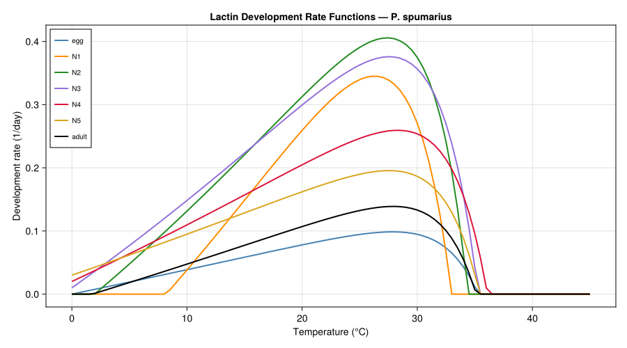
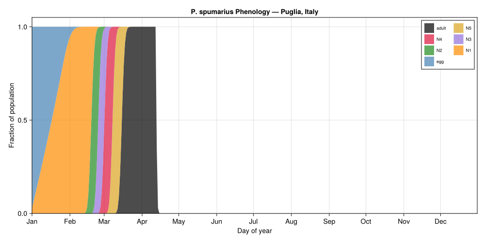
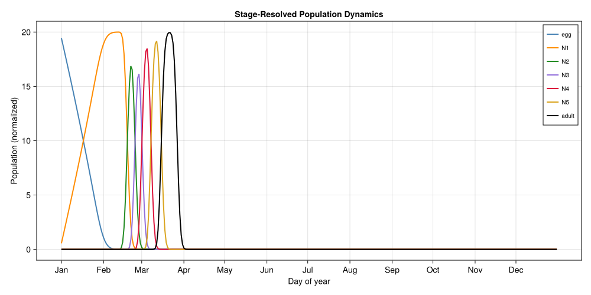
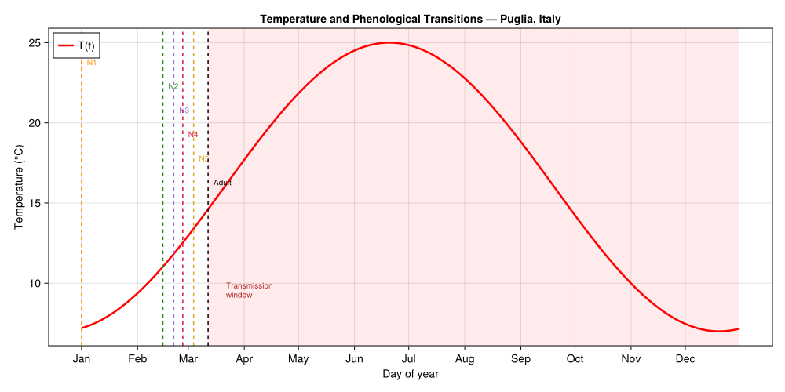
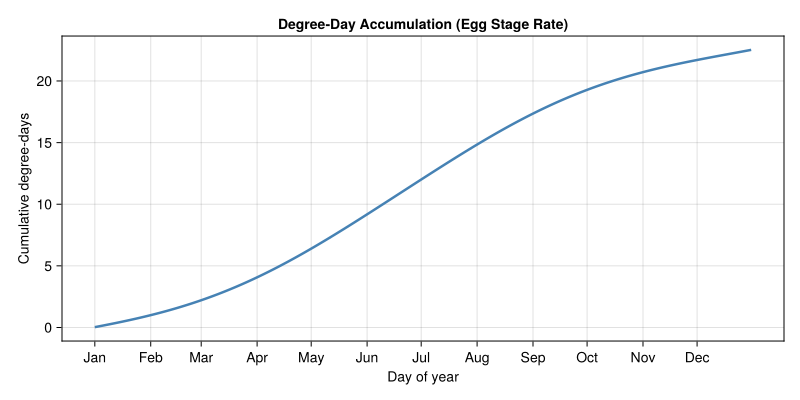
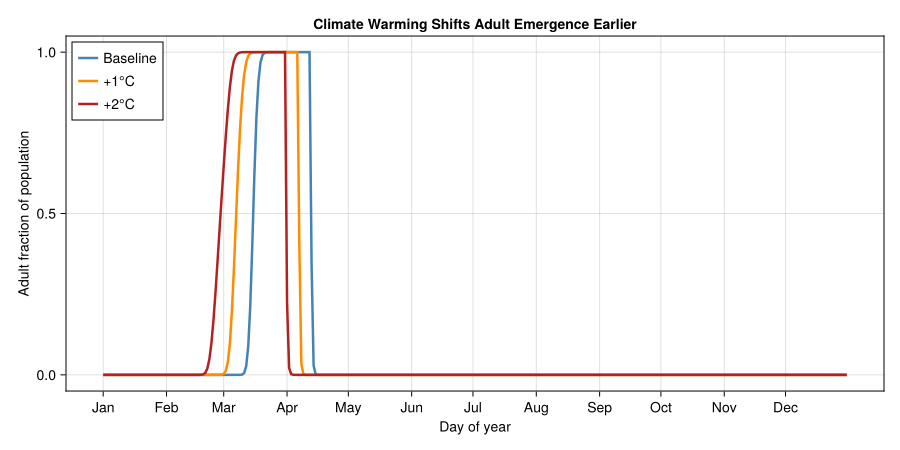

Philaenus spumarius Phenology Model
Simon Frost
- Introduction
- Development Rate: The Lactin Function
- Implementation
- Population Setup
- Temperature Forcing
- Simulation
- Results
- Climate Sensitivity Analysis
- Discussion
- References
Primary framing references: primary P. spumarius phenology literature and EFSA risk-assessment material.
Introduction
Philaenus spumarius (L.) — the meadow spittlebug — is the primary vector of Xylella fastidiosa in European olive groves. Since its detection in Puglia, Italy in 2013, X. fastidiosa subsp. pauca has devastated millions of olive trees, causing Olive Quick Decline Syndrome (OQDS). Adult spittlebugs acquire the bacterium while feeding on infected plants and transmit it when they move to healthy hosts. Because X. fastidiosa has no cure, managing vector populations — and critically, understanding when adults are active and feeding — is the cornerstone of control strategies.
This vignette implements a pure phenology model for P. spumarius. The model predicts the timing of emergence through 7 life stages (egg → 5 nymphal instars → adult) using a Kolmogorov–Von Foerster equation driven by temperature-dependent development rates. No mortality or reproduction is modeled — the focus is entirely on when each stage appears during the year. This is directly relevant to Xylella management because only adults transmit the pathogen, and the adult feeding window defines the transmission window.
Note: The original bibliography entry cited for this vignette does not correspond to a published paper. The Lactin development rate parameters used here are pedagogical approximations. Users should verify parameters against primary P. spumarius literature (e.g., Ponti et al. 2014; Di Lena et al. 2019; EFSA 2019 PLH Panel opinion) before use in research.
Kolmogorov–Von Foerster Equation
For each life stage $i \in \{\text{egg}, N_1, N_2, N_3, N_4, N_5, \text{adult}\}$, the population density $N^i(t, x)$ evolves as a function of calendar time $t$ and normalized physiological age $x \in [0, 1]$ within the stage:
\[\frac{\partial N^i}{\partial t} + \frac{\partial}{\partial x}\left[G^i(T(t)) \cdot N^i(t, x)\right] = 0\]
where $G^i(T)$ is the temperature-dependent development rate (Lactin function). Individuals enter stage $i$ at $x = 0$ from the completion of stage $i - 1$ (boundary condition: flux from $x = 1$ of the previous stage), and exit at $x = 1$ into the next stage. The initial condition places all individuals in the egg stage with uniform physiological age on January 1.
We discretize this PDE using a distributed delay approach (Manetsch/Vansickle $k$-substage Erlang method), which maps each continuous age-structured stage to $k$ substages with exponentially distributed residence times. With $k = 20$ substages per stage, this produces smooth, realistic emergence curves.
Development Rate: The Lactin Function
The temperature response for each stage follows the Lactin function (a variant of the Logan Type III model with an additive shift):
\[G^i(T) = \max\!\Big(0,\; e^{\rho^i T} - e^{\rho^i T_{\max}^i - (T_{\max}^i - T)/\Delta T^i} + \gamma^i\Big)\]
The exponential term $e^{\rho T}$ captures accelerating development at moderate temperatures, the second term imposes a sharp decline near the upper lethal threshold $T_{\max}$, and the offset $\gamma$ (typically negative) ensures that the rate is zero below a lower thermal threshold. The max(0, ·) clamp prevents negative rates at low temperatures.
Stage-Specific Parameters
Pedagogical Lactin development rate parameters used in this vignette:
| Stage | $\rho$ | $T_{\max}$ (°C) | $\Delta T$ (°C) | $\gamma$ |
|---|---|---|---|---|
| Egg | 0.0038 | 41.8 | 3.1 | −1.00 |
| N1 | 0.0182 | 37.0 | 3.7 | −1.16 |
| N2 | 0.0150 | 37.6 | 3.2 | −1.03 |
| N3 | 0.0130 | 38.9 | 3.5 | −0.99 |
| N4 | 0.0086 | 40.4 | 3.3 | −0.98 |
| N5 | 0.0063 | 40.3 | 3.2 | −0.97 |
| Adult | 0.0056 | 40.7 | 3.1 | −1.01 |
Lactin development rate parameters for P. spumarius life stages.
Implementation
using PhysiologicallyBasedDemographicModels
using CairoMakieCustom Lactin Development Rate
The package provides LoganDevelopmentRate (multiplicative scaling $\psi$) but the Lactin function uses an additive offset $\gamma$. We define a custom type that integrates with the PBDM framework:
"""
LactinDevelopmentRate(ρ, T_max, ΔT, γ)
Lactin nonlinear development rate:
`r(T) = max(0, exp(ρ*T) - exp(ρ*T_max - (T_max - T)/ΔT) + γ)`.
This is a variant of the Logan Type III model with an additive constant
`γ` (typically negative) that determines the lower thermal threshold.
"""
struct LactinDevelopmentRate{T<:Real} <: AbstractDevelopmentRate
ρ::T
T_max::T
ΔT::T
γ::T
function LactinDevelopmentRate(ρ::T, T_max::T, ΔT::T, γ::T) where {T<:Real}
ρ > 0 || throw(ArgumentError("ρ must be positive"))
ΔT > 0 || throw(ArgumentError("ΔT must be positive"))
new{T}(ρ, T_max, ΔT, γ)
end
end
function LactinDevelopmentRate(ρ::Real, T_max::Real, ΔT::Real, γ::Real)
T = promote_type(typeof(ρ), typeof(T_max), typeof(ΔT), typeof(γ))
LactinDevelopmentRate(T(ρ), T(T_max), T(ΔT), T(γ))
end
function PhysiologicallyBasedDemographicModels.development_rate(
m::LactinDevelopmentRate, T::Real
)
rate = exp(m.ρ * T) - exp(m.ρ * m.T_max - (m.T_max - T) / m.ΔT) + m.γ
return max(rate, zero(rate))
endStage-Specific Parameters
# Lactin development rate parameters used here as pedagogical approximations
# (ρ, T_max, ΔT, γ) for each life stage
const LACTIN_PARAMS = (
egg = (ρ = 0.0038, T_max = 41.8, ΔT = 3.1, γ = -1.00),
N1 = (ρ = 0.0182, T_max = 37.0, ΔT = 3.7, γ = -1.16),
N2 = (ρ = 0.0150, T_max = 37.6, ΔT = 3.2, γ = -1.03),
N3 = (ρ = 0.0130, T_max = 38.9, ΔT = 3.5, γ = -0.99),
N4 = (ρ = 0.0086, T_max = 40.4, ΔT = 3.3, γ = -0.98),
N5 = (ρ = 0.0063, T_max = 40.3, ΔT = 3.2, γ = -0.97),
adult = (ρ = 0.0056, T_max = 40.7, ΔT = 3.1, γ = -1.01),
)
# Build development rate models
stage_names = [:egg, :N1, :N2, :N3, :N4, :N5, :adult]
dev_rates = Dict{Symbol, LactinDevelopmentRate}()
for s in stage_names
p = LACTIN_PARAMS[s]
dev_rates[s] = LactinDevelopmentRate(p.ρ, p.T_max, p.ΔT, p.γ)
end
# Print lower effective thresholds (temperature where rate first becomes > 0)
println("Effective lower thermal thresholds:")
println("="^50)
for s in stage_names
dr = dev_rates[s]
T_low = 0.0
for T_test in 0.0:0.1:30.0
if development_rate(dr, T_test) > 0.0
T_low = T_test
break
end
end
println(" $(rpad(s, 6)): $(round(T_low, digits=1))°C")
endEffective lower thermal thresholds:
==================================================
egg : 0.1°C
N1 : 8.2°C
N2 : 2.0°C
N3 : 0.0°C
N4 : 0.0°C
N5 : 0.0°C
adult : 1.8°CDevelopment Rate Curves
temps = 0.0:0.5:45.0
fig1 = Figure(size=(900, 500))
ax1 = Axis(fig1[1, 1],
xlabel="Temperature (°C)",
ylabel="Development rate (1/day)",
title="Lactin Development Rate Functions — P. spumarius")
stage_colors = Dict(
:egg => :steelblue,
:N1 => :darkorange,
:N2 => :forestgreen,
:N3 => :mediumpurple,
:N4 => :crimson,
:N5 => :goldenrod,
:adult => :black,
)
for s in stage_names
dr = dev_rates[s]
rates = [development_rate(dr, T) for T in temps]
lines!(ax1, collect(temps), rates,
label=String(s), linewidth=2.0, color=stage_colors[s])
end
axislegend(ax1, position=:lt, framevisible=true, labelsize=10)
fig1<div id="fig-lactin-curves">

Figure 1: Lactin development rate curves for each P. spumarius life stage as a function of temperature. Each curve rises from zero below a lower threshold, peaks near 30–35 °C, and drops sharply at the upper lethal temperature.
</div>
Eggs have the lowest development rate (small $\rho = 0.0038$), consistent with the long overwintering egg stage. Nymphal instars N1 and N2 develop fastest, with high $\rho$ values producing steep thermal responses. The adult stage has a broad, low-amplitude curve reflecting extended adult longevity rather than a discrete developmental endpoint.
Population Setup
Distributed Delay Architecture
Each stage is represented by a DistributedDelay with $k = 20$ substages. Since the Lactin function returns development rate in units of $\text{day}^{-1}$ (fractional development per day), we set $\tau = 1.0$ for all stages — development completes when the cumulative rate reaches 1. Mortality is zero throughout (pure phenology model).
const K_SUBSTAGES = 20 # Erlang shape parameter
# Initial condition: all individuals in egg stage, uniform age distribution
# W0 = 1.0 spreads 1.0 unit of population uniformly across k substages
const N0_EGG = 1.0
spittlebug_stages = [
LifeStage(s,
DistributedDelay(K_SUBSTAGES, 1.0; W0 = (s == :egg ? N0_EGG : 0.0)),
dev_rates[s],
0.0) # μ = 0: no mortality
for s in stage_names
]
spittlebug = Population(:p_spumarius, spittlebug_stages)
println("P. spumarius phenology model:")
println(" Life stages: ", n_stages(spittlebug))
println(" Substages per stage: ", K_SUBSTAGES)
println(" Total substages: ", n_substages(spittlebug))
println(" Initial population: ", round(total_population(spittlebug), digits=3))P. spumarius phenology model:
Life stages: 7
Substages per stage: 20
Total substages: 140
Initial population: 20.0Temperature Forcing
We use a synthetic sinusoidal temperature profile representing a Mediterranean climate in the Puglia region of southern Italy — the epicenter of the X. fastidiosa outbreak in Europe. The profile gives winter minima around 7 °C (January) and summer maxima around 25 °C (July–August), consistent with long-term climate normals for Lecce (40.4°N, 18.2°E).
# Mediterranean climate: Puglia, Italy
# T(t) = 16.0 + 9.0 * sin(2π(t - 80)/365)
# Phase = 80 shifts the peak to late July (day 80 + 365/4 ≈ day 171)
function puglia_temperature(day)
doy = mod(day - 1, 365) + 1
return 16.0 + 9.0 * sin(2π * (doy - 80) / 365)
end
# Generate weather series
weather_temps = [puglia_temperature(d) for d in 1:365]
weather = WeatherSeries(weather_temps; day_offset=1)
println("Puglia (Italy) synthetic weather:")
println(" Winter minimum: $(round(minimum(weather_temps), digits=1))°C")
println(" Summer maximum: $(round(maximum(weather_temps), digits=1))°C")
println(" Annual mean: $(round(sum(weather_temps)/365, digits=1))°C")Puglia (Italy) synthetic weather:
Winter minimum: 7.0°C
Summer maximum: 25.0°C
Annual mean: 16.0°CSimulation
prob = PBDMProblem(spittlebug, weather, (1, 365))
sol = solve(prob, DirectIteration())
println("Simulation complete: $(length(sol.t)) days")
println(" Final total population: $(round(sum(sol.u[end]), digits=4))")Simulation complete: 365 days
Final total population: 0.0Stage Trajectories
# Extract population fraction in each stage over time
trajectories = Dict{Symbol, Vector{Float64}}()
for (i, s) in enumerate(stage_names)
trajectories[s] = stage_trajectory(sol, i)
end
# Compute total at each time point (should be ~constant since μ=0)
total_pop = total_population(sol)
# Stage fractions for stacked area
fractions = Dict{Symbol, Vector{Float64}}()
for s in stage_names
fractions[s] = trajectories[s] ./ max.(total_pop, 1e-12)
end
# Find median emergence day for each stage (first day > 1% of total)
println("\nPhenological milestones (day when stage reaches >1% of population):")
println("="^55)
for s in stage_names
frac = fractions[s]
idx = findfirst(f -> f > 0.01, frac)
if idx !== nothing
day = sol.t[idx]
month_names = ["Jan","Feb","Mar","Apr","May","Jun",
"Jul","Aug","Sep","Oct","Nov","Dec"]
month = month_names[min(12, max(1, div(day - 1, 30) + 1))]
println(" $(rpad(s, 6)): day $(rpad(day, 4)) (~$month)")
end
endPhenological milestones (day when stage reaches >1% of population):
=======================================================
egg : day 1 (~Jan)
N1 : day 1 (~Jan)
N2 : day 46 (~Feb)
N3 : day 52 (~Feb)
N4 : day 57 (~Feb)
N5 : day 63 (~Mar)
adult : day 71 (~Mar)Peak Abundance Timing
println("\nPeak stage fractions:")
println("="^55)
for s in stage_names
traj = trajectories[s]
peak_val = maximum(traj)
peak_idx = argmax(traj)
peak_day = sol.t[peak_idx]
month_names = ["Jan","Feb","Mar","Apr","May","Jun",
"Jul","Aug","Sep","Oct","Nov","Dec"]
month = month_names[min(12, max(1, div(peak_day - 1, 30) + 1))]
println(" $(rpad(s, 6)): peak on day $(rpad(peak_day, 4)) (~$month), " *
"N = $(round(peak_val, digits=4))")
endPeak stage fractions:
=======================================================
egg : peak on day 1 (~Jan), N = 19.4456
N1 : peak on day 43 (~Feb), N = 19.9958
N2 : peak on day 52 (~Feb), N = 16.8689
N3 : peak on day 58 (~Feb), N = 16.1511
N4 : peak on day 64 (~Mar), N = 18.4798
N5 : peak on day 71 (~Mar), N = 19.173
adult : peak on day 80 (~Mar), N = 19.9466Results
Phenology Diagram
fig2 = Figure(size=(1000, 500))
ax2 = Axis(fig2[1, 1],
xlabel="Day of year",
ylabel="Fraction of population",
title="P. spumarius Phenology — Puglia, Italy",
limits=(1, 365, 0, 1.05))
# Build stacked area data
stack_order = reverse(stage_names) # bottom to top: egg → adult
stack_labels = [String(s) for s in stack_order]
stack_colors_list = [stage_colors[s] for s in stack_order]
# Compute cumulative fractions for stacking
cumulative = zeros(length(sol.t))
for (j, s) in enumerate(stack_order)
lower = copy(cumulative)
upper = cumulative .+ fractions[s]
band!(ax2, sol.t, lower, upper,
color=(stack_colors_list[j], 0.7),
label=stack_labels[j])
cumulative .= upper
end
# Add month labels on x-axis
month_starts = [1, 32, 60, 91, 121, 152, 182, 213, 244, 274, 305, 335]
month_labels = ["Jan","Feb","Mar","Apr","May","Jun",
"Jul","Aug","Sep","Oct","Nov","Dec"]
ax2.xticks = (month_starts, month_labels)
axislegend(ax2, position=:rt, framevisible=true, labelsize=9, nbanks=2)
fig2<div id="fig-phenology">

Figure 2: Stacked area plot showing the fraction of the P. spumarius population in each life stage over one year under Puglia (Italy) climate conditions. Eggs dominate in winter; nymphal instars progress sequentially through spring; adults emerge in summer and persist through autumn — the Xylella fastidiosa transmission window.
</div>
Stage-Resolved Population Dynamics
fig3 = Figure(size=(1000, 500))
ax3 = Axis(fig3[1, 1],
xlabel="Day of year",
ylabel="Population (normalized)",
title="Stage-Resolved Population Dynamics")
for s in stage_names
lines!(ax3, sol.t, trajectories[s],
label=String(s), linewidth=2.0, color=stage_colors[s])
end
ax3.xticks = (month_starts, month_labels)
axislegend(ax3, position=:rt, framevisible=true, labelsize=10)
fig3<div id="fig-stage-dynamics">

Figure 3: Population in each life stage over the year. The sequential wave pattern shows cohort progression: eggs are consumed as N1 nymphs appear, which give way to N2, and so on. Adults represent the final, persistent stage.
</div>
Temperature Overlay with Phenological Transitions
fig4 = Figure(size=(1000, 500))
# Temperature profile
ax4a = Axis(fig4[1, 1],
xlabel="Day of year",
ylabel="Temperature (°C)",
title="Temperature and Phenological Transitions — Puglia, Italy",
yaxisposition=:left)
lines!(ax4a, 1:365, weather_temps, linewidth=2.5, color=:red, label="T(t)")
# Mark transition days
transition_colors = [:darkorange, :forestgreen, :mediumpurple,
:crimson, :goldenrod, :black]
transition_labels = ["N1", "N2", "N3", "N4", "N5", "Adult"]
for (j, s) in enumerate(stage_names[2:end])
frac = fractions[s]
idx = findfirst(f -> f > 0.01, frac)
if idx !== nothing
day = sol.t[idx]
vlines!(ax4a, [day], color=transition_colors[j],
linestyle=:dash, linewidth=1.5)
text!(ax4a, day + 3, maximum(weather_temps) - 1.5 * j,
text=transition_labels[j], fontsize=10,
color=transition_colors[j])
end
end
# Shade the adult transmission window
adult_frac = fractions[:adult]
adult_start_idx = findfirst(f -> f > 0.01, adult_frac)
if adult_start_idx !== nothing
adult_start = sol.t[adult_start_idx]
vspan!(ax4a, adult_start, 365, color=(:red, 0.08))
text!(ax4a, adult_start + 10, minimum(weather_temps) + 2,
text="Transmission\nwindow", fontsize=10, color=:firebrick)
end
ax4a.xticks = (month_starts, month_labels)
axislegend(ax4a, position=:lt)
fig4<div id="fig-temp-phenology">

Figure 4: Daily temperature (red) overlaid with the timing of phenological transitions. Vertical dashed lines mark the day when each nymphal instar first exceeds 1% of the population. The adult emergence window defines the X. fastidiosa transmission period.
</div>
Cumulative Degree-Days
cdd = cumulative_degree_days(sol)
fig5 = Figure(size=(800, 400))
ax5 = Axis(fig5[1, 1],
xlabel="Day of year",
ylabel="Cumulative degree-days",
title="Degree-Day Accumulation (Egg Stage Rate)")
lines!(ax5, sol.t, cdd, linewidth=2.5, color=:steelblue)
ax5.xticks = (month_starts, month_labels)
fig5<div id="fig-cdd">

Figure 5: Cumulative degree-day accumulation (from the egg stage development rate) over the year. Degree-day accumulation is slow in winter, accelerates through spring, and plateaus in late summer as temperatures exceed the thermal optimum.
</div>
Climate Sensitivity Analysis
To assess how warming affects phenological timing, we compare the baseline Puglia climate with +1 °C and +2 °C warming scenarios. Earlier adult emergence under warming directly extends the Xylella transmission window.
warming_scenarios = [0.0, 1.0, 2.0]
scenario_results = Dict{Float64, Any}()
for ΔT_warm in warming_scenarios
# Rebuild population (fresh initial conditions)
pop_w = Population(:p_spumarius, [
LifeStage(s,
DistributedDelay(K_SUBSTAGES, 1.0;
W0 = (s == :egg ? N0_EGG : 0.0)),
dev_rates[s], 0.0)
for s in stage_names
])
# Warmed weather
temps_w = [puglia_temperature(d) + ΔT_warm for d in 1:365]
weather_w = WeatherSeries(temps_w; day_offset=1)
prob_w = PBDMProblem(pop_w, weather_w, (1, 365))
sol_w = solve(prob_w, DirectIteration())
scenario_results[ΔT_warm] = sol_w
end
# Compare adult emergence timing
println("Adult emergence day (>1% of population) under warming:")
println("="^55)
for ΔT_warm in warming_scenarios
sol_w = scenario_results[ΔT_warm]
n_adult = n_stages(spittlebug)
adult_traj = stage_trajectory(sol_w, n_adult)
total_w = total_population(sol_w)
adult_frac_w = adult_traj ./ max.(total_w, 1e-12)
idx = findfirst(f -> f > 0.01, adult_frac_w)
day = idx !== nothing ? sol_w.t[idx] : "N/A"
label = ΔT_warm == 0.0 ? "Baseline" : "+$(ΔT_warm)°C"
println(" $(rpad(label, 12)): day $day")
endAdult emergence day (>1% of population) under warming:
=======================================================
Baseline : day 71
+1.0°C : day 61
+2.0°C : day 52Warming Comparison Plot
fig6 = Figure(size=(900, 450))
ax6 = Axis(fig6[1, 1],
xlabel="Day of year",
ylabel="Adult fraction of population",
title="Climate Warming Shifts Adult Emergence Earlier")
warm_colors = [:steelblue, :darkorange, :firebrick]
warm_labels = ["Baseline", "+1°C", "+2°C"]
for (i, ΔT_warm) in enumerate(warming_scenarios)
sol_w = scenario_results[ΔT_warm]
n_adult = n_stages(spittlebug)
adult_traj = stage_trajectory(sol_w, n_adult)
total_w = total_population(sol_w)
adult_frac_w = adult_traj ./ max.(total_w, 1e-12)
lines!(ax6, sol_w.t, adult_frac_w,
label=warm_labels[i], linewidth=2.5, color=warm_colors[i])
end
ax6.xticks = (month_starts, month_labels)
axislegend(ax6, position=:lt, framevisible=true)
fig6<div id="fig-warming">

Figure 6: Effect of climate warming on P. spumarius adult emergence timing. Each curve shows the adult population fraction under baseline, +1 °C, and +2 °C warming. Earlier emergence extends the Xylella fastidiosa transmission window.
</div>
Discussion
Phenological Plausibility
The model predictions are consistent with known P. spumarius field phenology in southern Europe:
- Eggs overwinter from autumn through early spring, developing slowly in winter when temperatures are well below the thermal threshold.
- Nymphal instars progress sequentially through spring (March–June), with each instar occupying a 2–4 week window. The nymphs are the characteristic “spittle” stage found on vegetation.
- Adults emerge in June–July and persist through autumn, feeding on xylem sap from a wide range of host plants. This is the stage that transmits X. fastidiosa.
- The model is univoltine (one generation per year), consistent with P. spumarius biology in Mediterranean climates.
Implications for Xylella Management
The adult feeding window is the transmission window for X. fastidiosa. Key management implications:
- Timing of vector control: Insecticide applications or mechanical control (mowing of herbaceous hosts) should target the period just before adult emergence to minimize the number of vectors that reach olive canopies.
- Climate change: Warming shifts adult emergence earlier, extending the transmission season. Under +2 °C warming, the transmission window may lengthen by 2–3 weeks — a significant increase in epidemic potential.
- Regional variation: The phenological model can be driven by site-specific weather data to produce location-specific management calendars across the Mediterranean.
Model Limitations
This is a pure development model with no mortality, reproduction, or density dependence. It answers “when do adults appear?” but not “how many?” Key extensions for a full population model would include:
- Egg mortality (overwintering losses, predation)
- Nymphal mortality (parasitoids, especially Ooctonus vulgatus)
- Adult fecundity (temperature-dependent oviposition rates)
- Host plant quality (xylem nutrient availability)
- Spatial dispersal (adult flight between herbaceous and tree hosts)
The distributed delay framework used here extends naturally to these additions by setting stage-specific mortality rates $\mu > 0$ and coupling adult maturation output back to egg input.
References
Suggested primary literature for parameter verification includes Ponti et al. (2014), Di Lena et al. (2019), and the EFSA PLH Panel opinion (2019).